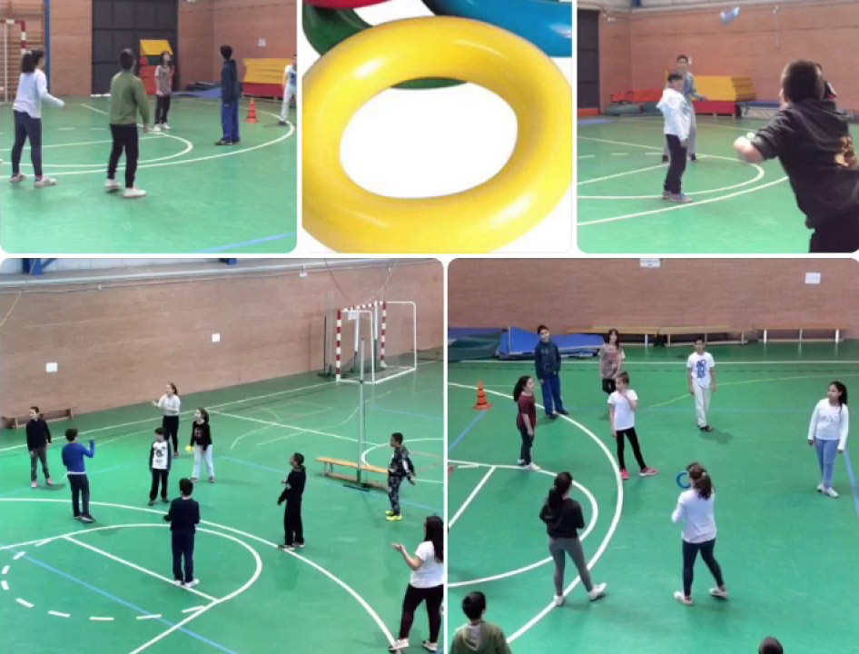

Características generales y Objetivo
El Ringo es un juego de lanzamiento y recepción muy similar al Frisbee. La base de nuestra práctica está en los distintos aspectos técnicos del Frisbee.
El objetivo del RINGO-RED es conseguir que el ringo caiga al suelo dentro del campo del equipo contrario, o lanzarlo de tal forma que el otro equipo sea incapaz de devolverlo correctamente.
TERRENO DE JUEGO
Se juega dentro del terreno de juego de un campo de Voleibol, por tanto el terreno de juego medirá 18 X 9 m. La red se puede situar a una altura inferior aproximadamente a 2 metros. aunque se puede adaptar a terrenos de juego más pequeños dependiendo de la edad y número de participantes.
MATERIAL
Se juega con un ringo, es idóneo el ringo hueco hinchable que puede regularse por una válvula el tamaño y dureza.
NÚMERO DE PARTICIPANTES
Los equipos los componen 6 jugadores/as que se colocarán, 3 delante, los delanteros y tres detrás, los zagueros, alternando chico-chica.
DESARROLLO DEL JUEGO Y PRINCIPALES REGLAS
- El saque se realizará detrás de la línea de ataque y lo efectúa el jugador o jugadora situado como zaguero derecho.
- Para puntuar no es necesario haber sacado. Saca el equipo que puntúa, en el caso que se recupere el saque, se produce una rotación del equipo en la dirección de las agujas del reloj.
- El ringo puede recepcionarse con cualquier parte del cuerpo, evitando que caiga al suelo.
- Para puntuar directamente el ringo debe tocar el suelo con un ángulo menor a 45°.
- El ringo que es tocado por varios jugadores ante de la recepción, no se considerarán como pases.
- Se tiene que dar un pase como mínimo y dos pases cómo máximo antes de pasar el ringo al equipo contrario, pero los dos pases no pueden realizarse entre los mismos jugadores.
- El jugador o jugadora nunca puede tocar la red.
- El ringo puede tocar la red siempre.
- EI ringo debe recepcionarse siempre, no permitiéndose el golpeo del mismo.
- Si el ringo cae sobre las líneas del terreno de juego, el punto es válido.
- En los encuentros cada set tiene 15 puntos, con dos de ventaja.